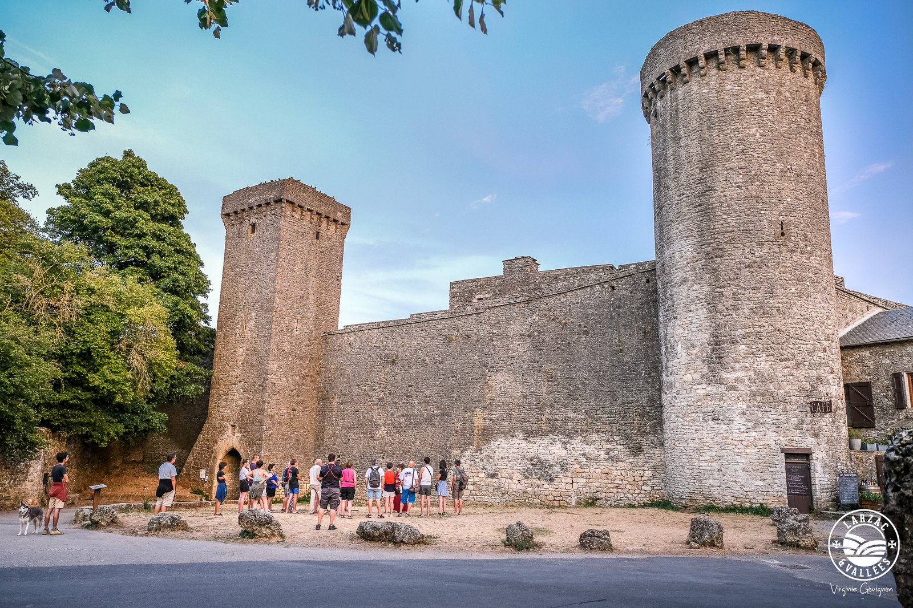

Remparts, château, église et maisons anciennes racontent l’histoire de cette cité templière puis hospitalière du Larzac. Une invitation à parcourir le village et à regarder les détails de son patrimoine.

Les remparts
L’enceinte et ses tours racontent l’histoire de la cité fortifiée du Larzac.
© OTLV Virginie Govignon
Voir la notice de ce monument →Pour préparer votre sortie, consultez les visites proposées, les horaires et les conditions d’accès auprès du service tourisme de La Couvertoirade.
Préparer la visite sur le site officiel →